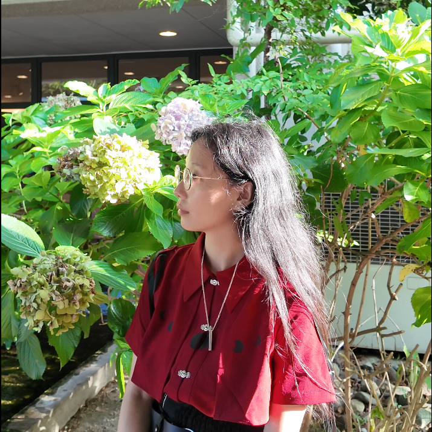

Ph.D. Student
University of South Carolina · Dr. Wei's Lab

fjhy1116 at gmail dot com
jiahuiyu at email dot sc dot edu
Ph.D. Student · University of South Carolina
I am a Ph.D. student in
Dr. Wei's Lab
at the University of South Carolina.
My research focuses on functional materials and biotechnologies, with
particular interest in combining molecular dynamics simulations and
machine learning to understand and design materials with tailored properties.
Outside of work, I like painting! (
)
Background
University of South Carolina · Dr. Wei's Lab
Institute of Mechanics, Chinese Academy of Sciences · Beijing
Jilin University · Changchun
Updates
My paper, Polystyrene Nanoplastics as PFAS Carriers and Their Interactions with Zwitterionic Phospholipid Membranes, was accepted by Nanoscale Advances.
My paper, Adsorption and Electron Transfer of Metal-Reducing Decaheme Cytochrome Protein MtrF on Iron Oxide Nanoparticle Surfaces, was accepted by Nanoscale.
I joined Wei's Lab at the University of South Carolina, where I am very fortunate to be advised by Dr. Tao Wei.
I graduated from the Institute of Mechanics, Chinese Academy of Sciences, with an M.S. degree in Mechanical Engineering.
Research Output
Jiahuiyu Fang, Tongxuan Qiao, Pranab Sarker, Xiaoxue Qin, Shuting Zhang, Size Zheng, Mark J. Uline*, Tao Wei*, "Polystyrene Nanoplastics as PFAS Carriers and Their Interactions with Zwitterionic Phospholipid Membranes," Nanoscale Advances, 2026, 8, 1346-1357.
Jiahuiyu Fang, Pranab Sarker, Xiaoxue Qin, Shuting Zhang, Size Zheng, Tao Wei*, "Adsorption and Electron Transfer of Metal-reducing Decaheme Cytochrome Protein MtrF on Iron Oxide Nanoparticle Surfaces," Nanoscale, 2025, 17, 16737.
Alimi Abiodun, Jiahuiyu Fang, Adam Parris, Xiaoxue Qin, Md Waliullah Hossain, Barman Swagatam, Tao Wei*, Chuanbing Tang*, "Programming Interfacial Function through Alternating Sequence in Amphiphilic Copolymers," Accepted.
Guangyao Wu, Jiahuiyu Fang, Kapil Shrawankar, Wen Guo, Satoshi Nagao, Xuhong Chen, Yuchen Wu, Tao Wei, Zhan Chen*, "Elucidation of the Effects of Electrostatic Interactions on Protein Structures at Buried Solid/Liquid Interfaces: A Combined Study with Experiment, Simulation, Isotope Labeling, and Spectra Calculation," Analytical Chemistry, 2026, 98, 10, 7676-7684.
Shuting Zhang, Jiahuiyu Fang, Pranab Sarker, Xiaoxue Qin, Jian Liu, Yijin Mao, Jianlin Cheng*, Mark J. Uline*, Tao Wei*, "Atomistic Modeling of Bio-Nano Hybrids: Interactions Between Iron Oxide Nanoparticles and the Outer Membrane of Shewanella," ACS Biomaterials Science & Engineering, 2025, 11, 8, 5062.
Xiaoxue Qin, Jiahuiyu Fang, Ariana Annie Chen, Pranab Sarker, Md Symon Johan Sajib, Mark J. Uline*, Tao Wei*, "Hydration and Antibiofouling Behavior of Zwitterionic Polycarboxybetaine-Grafted Surfaces Studied with Atomistic Simulations," Langmuir, 2025, 41, 1005.
Xiaoxue Qin, Ariana Annie Chen, Jiahuiyu Fang, Pranab Sarker, Mark J. Uline*, Tao Wei*, "Atomistic Simulations of Hydration and Antibiofouling Behavior of Amphiphilic Polymer Brush Surfaces Functionalized with TMAO and Short Fluorocarbon," Langmuir, 2024, 40, 23994.
Yuqun Lan, Shuang Li*, Haitao Guo, Qinyuan Liu, Tairan Wang, Lianqiao Zhou, Jiahuiyu Fang, Yang Zhao, Zanxin Zhou, Qi Wang, Jing Li, Yiping Zhu, Rongfang Su, Xinyi Wen, Xinkai Xu, Yuhong Wu, Zixuan Wang, Bo Liu, Jiaqi Li, Hui Li, Hanfei Gao, Yuchen Wu, Qi Gu, Xi-Qiao Feng, Xinge Yu*, Yewang Su*, "Soft biodegradable implants for long-distance and wide-angle sensing," Nature, 2026, 649, 366-374.
Hua-Zhen Jiang, Qi-Sheng Chen*, Zheng-Yang Li*, Xin-Ye Chen, Hui-Lei Sun, Shao-Ke Yao, Jiahuiyu Fang, Qi-Yun Hu, "Microstructure and Size-Dependent Mechanical Properties of Additively Manufactured 316L Stainless Steels Produced by Laser Metal Deposition," Acta Metallurgica Sinica (English Letters), 2023, 36, 1, 1-20.
Xiaoxue Qin, Pranab Sarker, Colin Tang, Jiahuiyu Fang, Size Zheng, Tao Wei*, "Atomistic Simulations of PFAS Self-Assembly in Water and Insertion into the E. coli Outer Membrane," Physical Chemistry Chemical Physics, 2026, 28, 18254-18266.
Hua-Zhen Jiang, Shuang Peng, Qi-Yun Hu, Guangyi Wang, Qi-Sheng Chen*, Zheng-Yang Li*, Hui-Lei Sun, Jiahuiyu Fang, "Corrosion and Cavitation Erosion Resistance of 316L Stainless Steels Produced by Laser Metal Deposition," Acta Metall Sin, 2023, 60, 11, 1512-1530.
Jiahuiyu Fang, Shuting Zhang, Pranab Saker, Xiaoxue Qin, Mark J. Uline*, Tao Wei*, "Bio–Nano Hybrids: Molecular Interactions between Iron Oxide Nanoparticles and Outer Membrane Cytochromes of Shewanella oneidensis," Under review.
Charles Laber, Size Zheng, Ashley Kimble, Anthony Bednar, Jiahuiyu Fang, Tao Wei, Gary Baker*, "Hydrophobic Deep Eutectic Solvents for the Efficient Removal of Priority Polyfluoroalkyl Substances from Water," Under review.
Research Output
Jiahuiyu Fang, Tongxuan Qiao, Pranab Sarker, Xiaoxue Qin, Size Zheng, Tao Wei, "Atomistic Simulations of PFAS–Polystyrene Nanoplastic Complex Formation and Adsorption on Phospholipid Membranes," ACS Spring Conference, Atlanta, 2026.
Xiaoxue Qin, Pranab Sarker, Jiahuiyu Fang, Tao Wei, "Hydration and Antibiofouling Behaviors of Zwitterionic Sulfobetaine Methacrylate Polymer Surfaces Studied with Atomistic Simulations," ACS Spring Conference, Atlanta, 2026.
Pranab Sarker, Xiaoxue Qin, Jiahuiyu Fang, Tao Wei, "Multiscale Simulations of Hydration and Antibiofouling Behavior of Zwitterionic Sulfobetaine Methacrylate (SBMA)," ACS Fall Conference, D.C., 2025.
Size Zheng, Xufeng Liu, Pranab Sarker, Jiahuiyu Fang, Xiaoxue Qin, Hanning Chen, Yong Wei, Yi Liu, Tao Wei, "Machine-Learning Molecular Dynamics Simulations of Hydration Behavior of TMAO Zwitterion," ACS Fall Conference, D.C., 2025.
Jiahuiyu Fang, Shuting Zhang, Pranab Sarker, Xiaoxue Qin, Roberto Gambarini, Mark Uline, Aiichiro Nakano, Tao Wei, "Adsorption and Electron Transfer Behaviors of Decaheme Cytochrome Protein MtrF on Iron Oxide Nanoparticle Surfaces," ACS Fall Conference, Denver, 2024.
Pranab Sarker, Jiahuiyu Fang, Shuting Zhang, Tao Wei, "Interactions and Kinetics of Electron Transfer between an Iron Oxide Nanoparticle and Shewanella oneidensis Cytochromes," MRS Fall Conference, Boston, 2024 (Invited Talk).
Xiaoxue Qin, Ariana Chen, Jiahuiyu Fang, Pranab Sarker, Mark J. Uline, Tao Wei, "Atomistic Study on the Hydration and Fouling Resistance Behaviors of Hybrid Amphiphilic and Zwitterionic Polymer Surfaces," ACS Fall Conference, Denver, 2024.